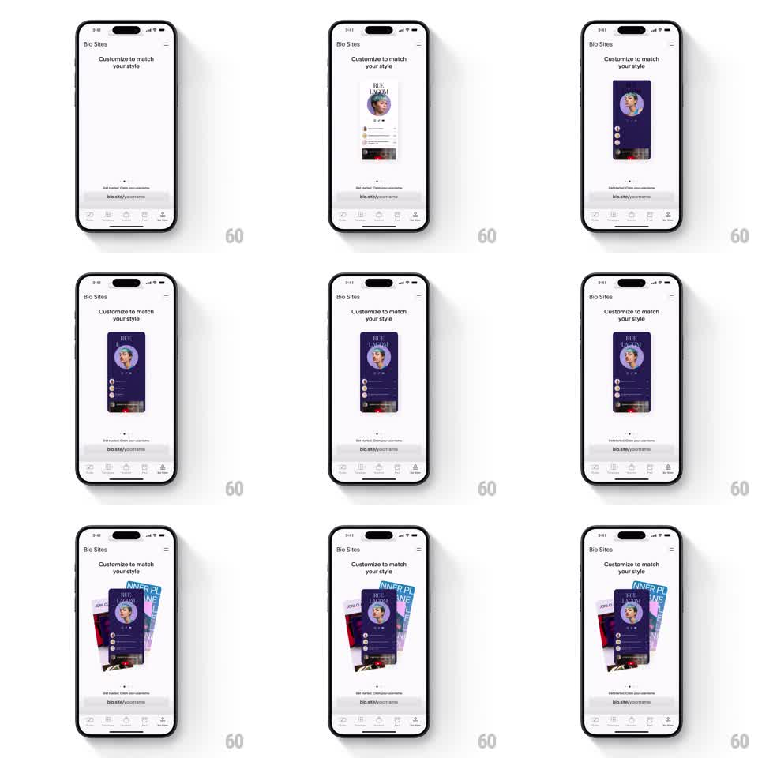

Media
Frame-by-frame

Rebuild this animation 1:1: Unfold's Bio Sites intro - a single bio-site preview card cycles through theme color washes, then fans out into a stack of themed cards showing the range.

Rebuild this animation 1:1: Unfold's Bio Sites intro - a single bio-site preview card cycles through theme color washes, then fans out into a stack of themed cards showing the range. ## Integration Integration: stack-agnostic spec - springs given as stiffness/damping, timed motions as duration + curve; map every value to your framework and animation library of choice. ## Scene "Bio Sites" screen with the heading "Customize to match your style" and an empty center stage. A bio-site card rises into view: avatar, name, link rows, and a music player strip at its bottom. The card's theme washes from light to deep navy-purple; then the card fans into a stack of 4-5 themed variants (dark, red, teal, light blue) angled behind it. Bottom: the bio.site/yourname claim bar and tab bar. ## Motion spec Pattern: card entrance, theme wash cycle, fan-out stack. - The card rises from below center (spring ~300/22) with a soft shadow growing under it. - Theme wash: the card's background crossfades light -> navy-purple (500ms), text and controls re-tinting in step (300ms) - content layout never changes. - Fan-out: the card duplicates into its variants, which rotate out from behind it (-14deg, -7deg, +7deg, +14deg, spring ~280/18, 60ms stagger from the center card outward) and spread horizontally (~36pt each step). - The front card stays upright and sharp; fanned cards dim ~10% behind it. ## Calibration - The fan pivots at the cards' bottom-center so tops splay like a hand of cards. - Theme differences are colorways of the same layout - no layout changes between cards. ## Reduced motion Card fades in at final theme; stack appears without rotation. ## Don't miss - The music player strip is part of every card variant, re-tinted per theme. - The heading and claim bar never move; the stage belongs to the card.